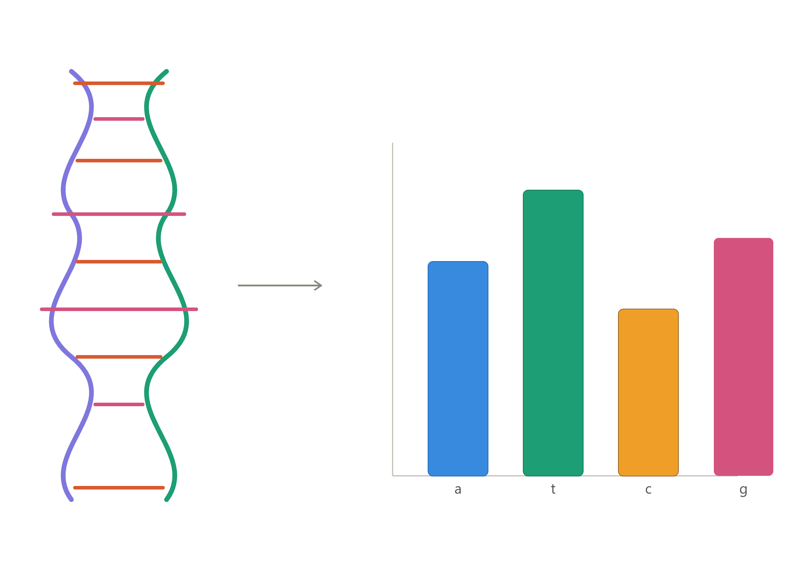
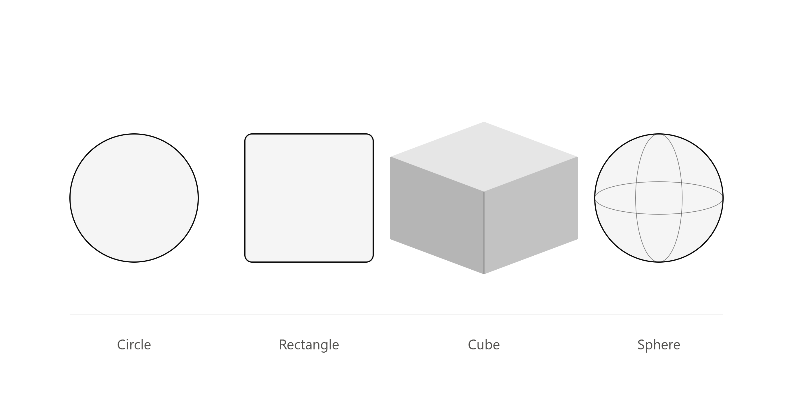
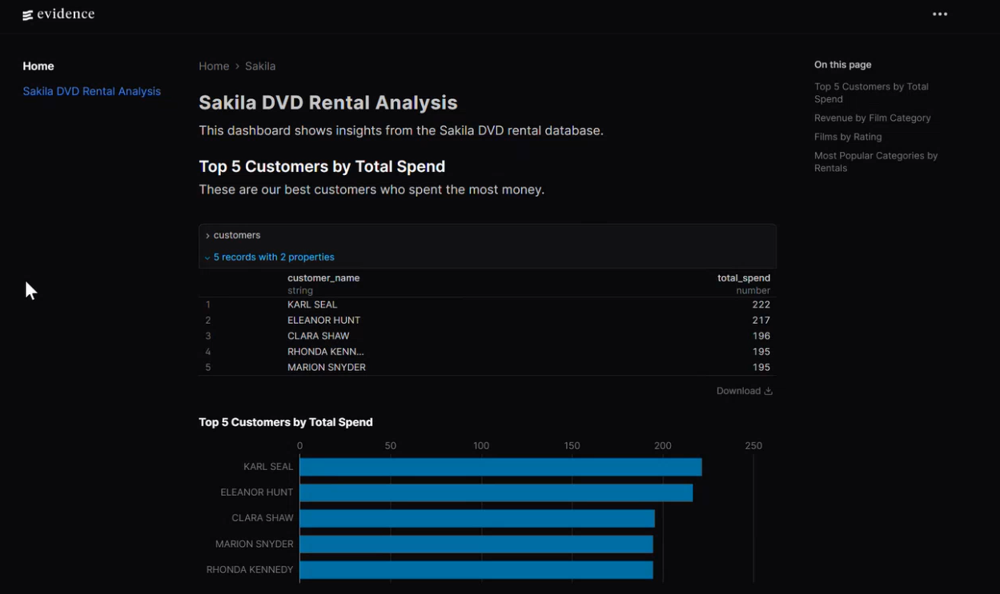
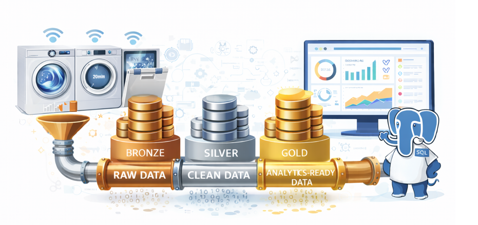
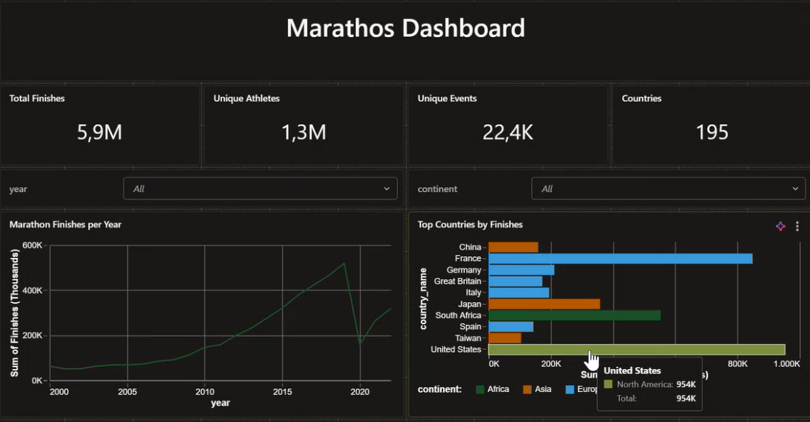
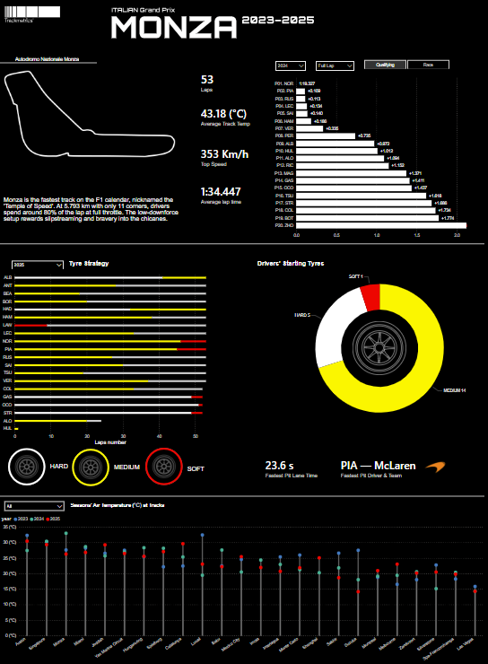
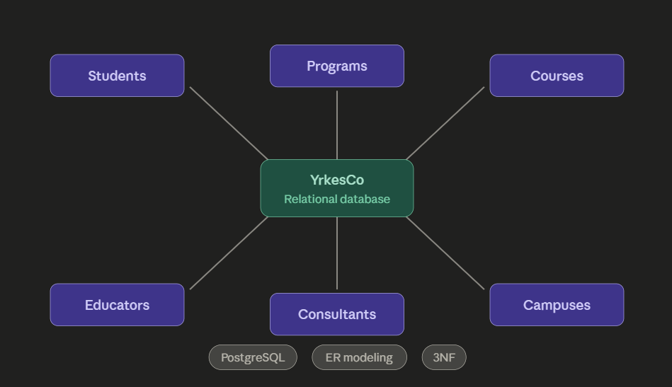

A Python tool that parses DNA sequence files in two different formats (single-line and
multi-line), computes nucleotide (A/T/C/G) frequency counts, and visualizes the results as bar
charts using matplotlib.


Built a Python OOP library modeling 2D/3D geometric shapes with inheritance, polymorphism,
operator overloading, and a matplotlib-based plotter, backed by a full pytest test suite.

Built an end-to-end analytics pipeline on the Sakila DVD rental dataset, using dlt to migrate
SQLite data into DuckDB, writing SQL for exploratory analysis and KPIs, and delivering an
interactive Evidence BI dashboard with revenue, customer, and category insights.

A team-built, event-driven IoT data platform streaming sensor data from a simulated fleet of
1,200 home appliances through a Bronze → Silver → Gold pipeline, surfacing
predictive-maintenance insights in a live dashboard.

Built a full medallion-architecture pipeline on the Kaggle "Big Dataset of Ultra-Marathon
Running" (~7.5M rows, 1798–2022). Bronze ingestion → Silver cleaning → Gold star schema, plus a
scheduled daily pipeline, a streaming table, an AI/BI dashboard and a Genie space.
PySpark · Databricks · Unity Catalog · Delta Lake · SQL · Lakeflow Declarative Pipelines

A school project where data engineering students work together with UX students to build an
interactive analytics dashboard on Formula 1 race data from the Italian Grand Prix at Monza
(2023–2025).

Database Design for a Vocational College
Designed and implemented a relational database for a fictional vocational college (YrkesCo) to
replace scattered Excel-based tracking of students, courses, programs, instructors, and
consultants. Covered the full modeling process — conceptual → logical → physical — and
implemented it in PostgreSQL with normalized tables (3NF), test data, and join queries.